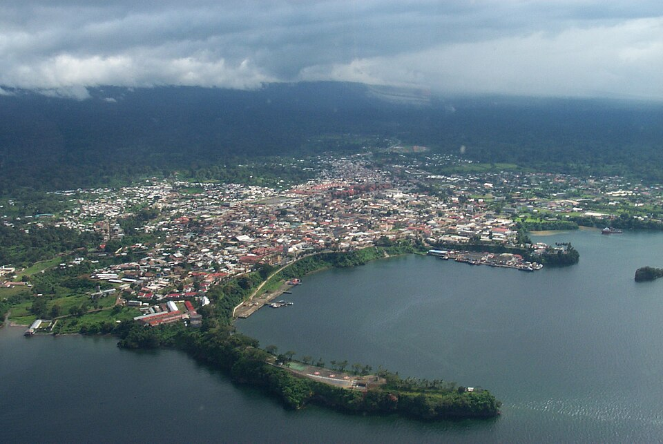
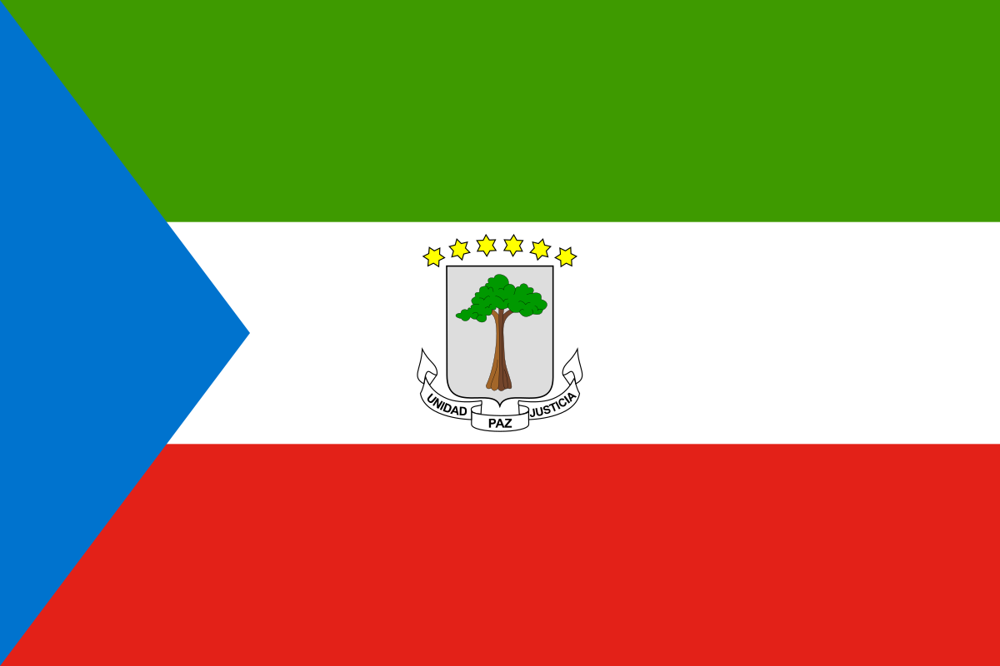
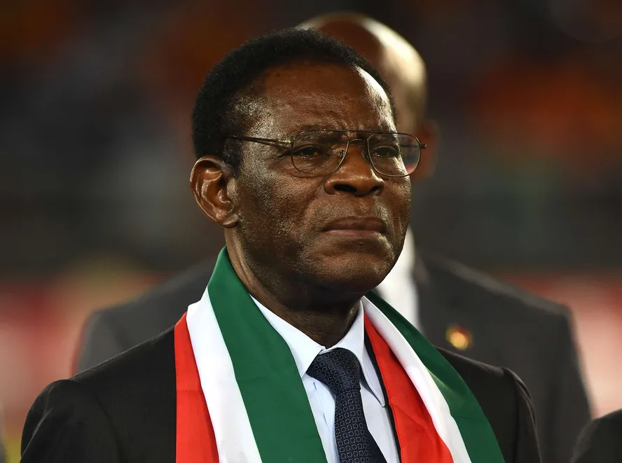

-Guiné Equatorial-
A Guiné Equatorial é um país localizado na África Central, conhecido por sua rica diversidade cultural, belas paisagens naturais e importante produção de petróleo. Apesar de ser um dos menores países do continente africano, possui uma história marcante, influenciada pela colonização europeia e pelas tradições africanas. Este site foi criado com o objetivo de apresentar informações sobre a geografia, cultura, economia, clima, história e curiosidades da Guiné Equatorial, permitindo conhecer melhor suas características, costumes e importância do país.
-Localização, Capital e Cidades-
A Guiné Equatorial está localizada no Golfo da Guiné: oeste da África Central. Faz fronteira com Camarões ao
norte e Gabão ao sul e leste.O território da Guiné Equatorial é dividido em duas partes principais: a região
continental, chamada Rio Muni, e várias ilhas, entre elas Bioko, onde está localizada a antiga capital, Malabo.
A capital do país até janeiro de 2026 era Malabo e atualmente é a Cidade da Paz. A população do país em 2026
é estimada em cerca de 1,98 milhão de habitantes e cerca de 64% da população é urbana.

-Bandeira-
A bandeira da Guiné Equatorial foi criada em 1979. Ela possui três faixas horizontais (verde, branco, vermelho) com um triângulo azul e o brasão nacional ao centro. As cores representam a vegetação (verde), paz (branco), independência (vermelho) e o mar (azul). O brasão inclui uma árvore de algodão da seda e seis estrelas

-Geografia e turismo-
A Guiné Equatorial é composta pela região continental (Rio Muni/Mbini) e ilhas, sendo a Ilha de Bioko a mais populosa e onde fica a capital, Malabo. O país é conhecido por suas florestas tropicais, praias e biodiversidade, incluindo locais como o Pico Basilé, o Parque Nacional de Malabo e a Catedral de Santa Isabel. O turismo foca na natureza, praias e cultura, sendo Bata e Malebo os principais centros.
-Clima-
O clima da Guiné Equatorial é do tipo Equatorial e predominantemente quente e úmido. As chuvas são muito frequentes entre os meses de abril e novembro e menos frequentes entre dezembro e março. As temperaturas médias constantes entre 25°C e 26°C. A região de San Antonio de Ureca é um dos locais mais úmidos do mundo, superando 11.000 mm por ano. As florestas tropicais cobrem boa parte do território e contribuem para uma rica biodiversidade. A fauna e a flora da Guiné Equatorial possuem enorme valor ambiental, com espécies raras de animais, aves e plantas. Algumas regiões do país estão entre as mais úmidas do planeta, favorecendo a existência de densas florestas e rios importantes.
-Cultura-
A cultura da Guiné Equatorial tem grandes influências da colonização espanhola. A música tradicional usa instrumentos como os tambores e harpas de arco. As danças tradicionais são o balelé e o ibanga. A gastronomia é baseada em ingredientes locais: peixes, camarão, amendoim e folhas de bananeira. As principais religiões são o catolicismo e várias religiões de matriz africana.
-História-
Historicamente, o país passou por períodos difíceis. Após séculos de colonização portuguesa e espanhola, a Guiné Equatorial conquistou sua independência em 1968. Entretanto, nos anos seguintes enfrentou uma forte ditadura marcada pela violência e perseguições políticas. A partir da década de 1990, a descoberta de petróleo transformou a economia nacional, aumentando significativamente as receitas do país. A Guiné Equatorial foi colonizada por Portugal em 1471 e cedida à Espanha em 1778, tornando-se a Guiné Espanhola até a independência em 12 de outubro de 1968. Outro ponto marcante da história do país foi a ditadura de Macías Nguema (1968-1979): um regime de terror que resultou em cerca de 50 mil mortes e perseguição política. Nos anos 90 a descoberta de grandes reservas de petróleo e gás mudou drasticamente a economia do país.
-Economia-
A principal riqueza da Guiné Equatorial são a agricultura e a pesca, com produtos como o algodão, café, cana-de-açúcar, várias frutas etc. Também depende do gado, da exportação de madeira e de minerais. Além disso, O país é um dos principais produtores de petróleo na África. O Produto Interno Bruto (PIB) do país é de 18,5 bilhões de dólares. E o PIB per capita: 19.998 dólares. A moeda usada no país é o Franco guineense.

-Idiomas-
Línguas Oficiais: Espanhol, francês e português.
-Curiosidades-
Curiosidades: A Guiné Equatorial, na África Central, é o único país africano com o espanhol como língua
oficial
-Nova Capital: A Cidade da Paz (antiga Oyala) foi construída no continente para ser a nova
capital.
-Biodiversidade: Possui o Sapo-Golias, o maior sapo do mundo, na região de Bioko
-Lugar mais Chuvoso:A vila de Ureca, em Bioko, é um dos locais mais úmidos da África.
-Línguas oficiais: Além do espanhol, o francês e o português são línguas oficiais. O país
integrou-se à Comunidade dos Países de Língua Portuguesa (CPLP) em 2014.